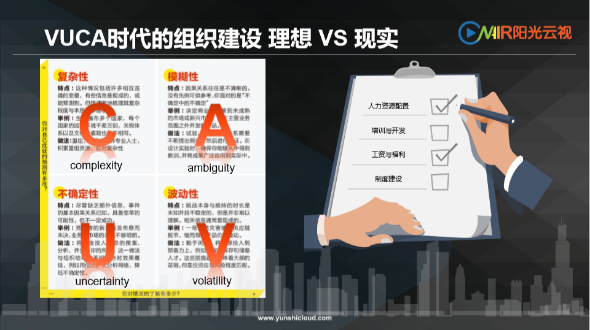
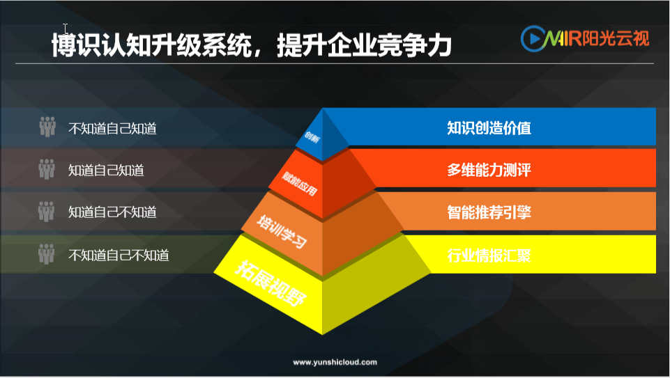
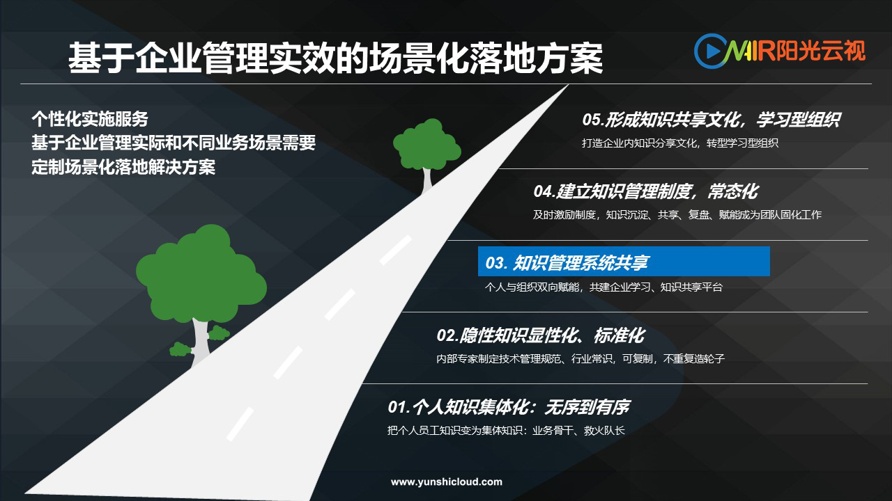
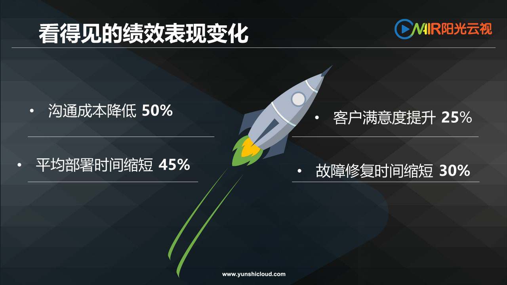
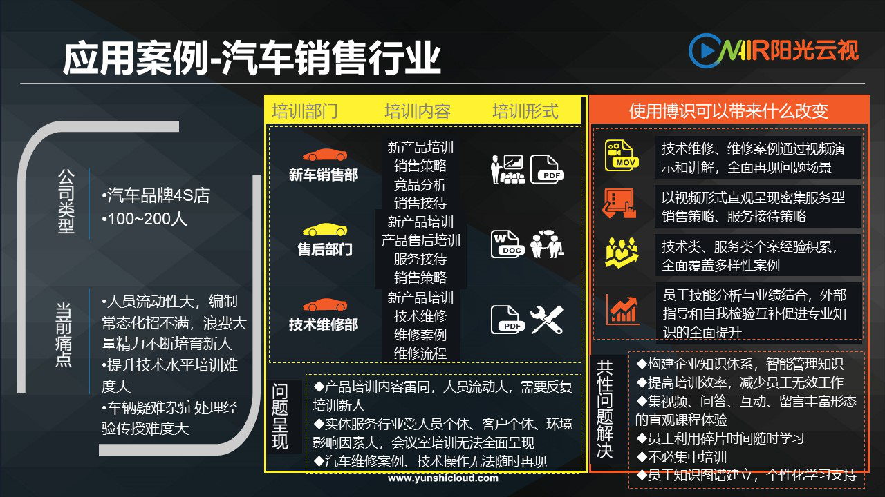

ONAIR阳光云视|博识知识库产品召开《企业组织发展（OD）及数字化萃取操作实务》分享会
6月28日，北京阳光云视科技有限公司与北京软件和信息服务业协会联合举办了《企业组织发展（OD)及数字化萃取操作实务》分享会，本次活动吸引了数十家单位代表参与，会上，阳光云视博识产品团队和人力资源资深专家张媛老师共同为企业就构建学习型组织的理论—方法—操作实务进行分享，各企业就自身问题与老师们进行了充分交流和探讨，活动得到了到场朋友们的一致肯定。
会上ONAIR阳光云视的视频云运营总监——范大勇，首先分享了数字化时代给组织发展带来的新挑战，以及博识产品化思维的破解之道。
你还在怕优秀员工一走，你们的企业组织发展水平一夜回到解放前么？
你还在担心新员工一来，你们企业的业务风险就骤然升高么？
为什么华为、阿里这些商业巨头有今天的成就？
那就是他们都做了这样一件事——
在企业发展过程中，重视人才梯队培养与知识资产的管理！

阳光云视从视频专业出发，通过产品破解数字化时代的组织发展难题，全新推出了新一代企业知识管理系统——博识！
那么博识是如何实现的呢？

博识KMS通过行业情报汇聚资讯来拓展企业视野，用智能推荐引擎来制定培训学习计划，用多维度能力测评洞察创新型人才，打造学习型组织，助力企业整体认知能力升级，实现知识创造价值，最终提高企业竞争力。
组织发展当然要顺应数字化的趋势，也要有明确的方法论指导，接下来人力资源资深专家张媛老师分享了《从组织能力到组织学习》的专题，案例丰富，方法落地性强。

最后，博识团队分享了知识资产管理落地的案例，基于场景化的落地实施服务贴合企业发展实际，受到了与会人员的一致好评。

博识KMS落地解决方案
博识知识管理，是集数字化人才洞察、智能化知识管理和视频化培训学习、多维能力测评于一体，不仅是知识资产沉淀，更能实现企业和员工的双向赋能。产品在内测期间已经助力技术型和营销型企业实现知识资产沉淀、场景化、数字化的视频培训和学习。

博识落地某技术驱动型企业效果

博识在汽车销售行业的应用
不管是金融、电信、政府、能源、医疗、制造、零售、教育等行业客户，博识知识库可以为您轻松打造从培训、自主学习、结果考核的完整培训流程，让您轻松解决跨区域培训、员工自主学习、课后自动考核等传统培训手段无法解决的问题。